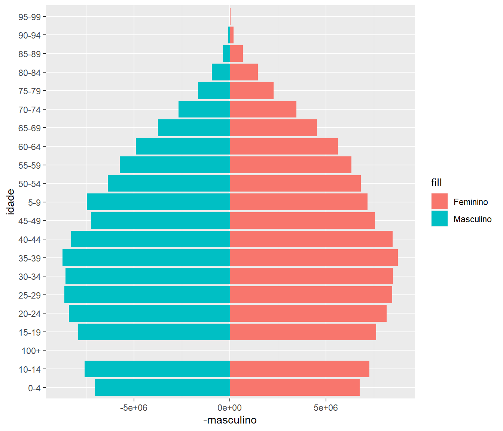
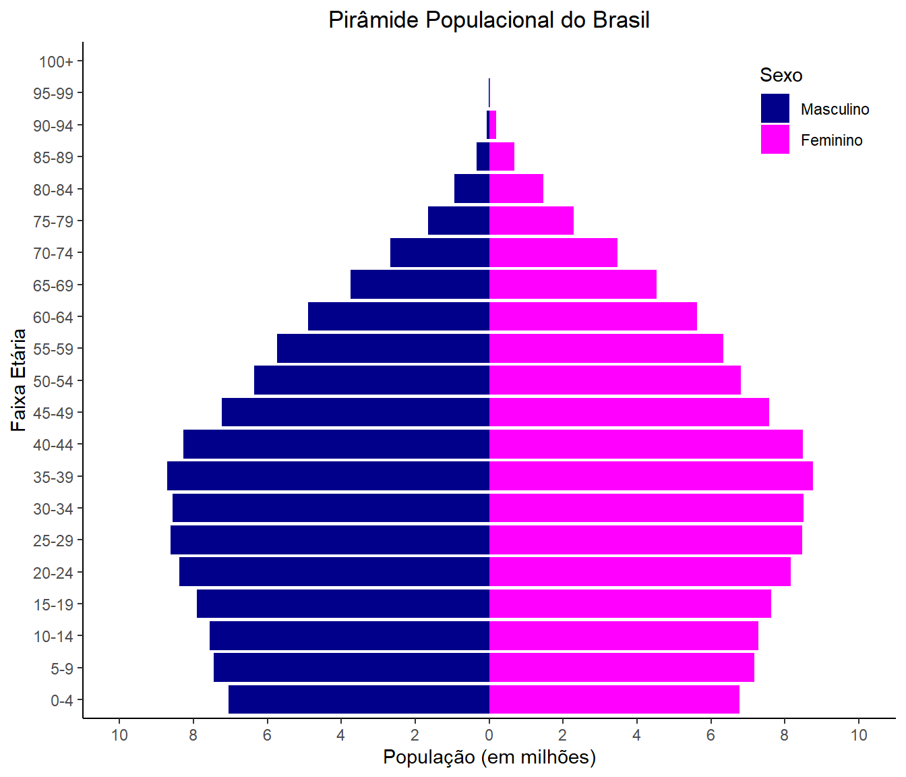

UNIVERSIDADE FEDERAL DO PARANÁ
CE303 – VISUALIZAÇÃO DE DADOS APLICADA
Profº Dr. Anderson Ara
Aluno: GRR20233881 – Raymundo Eduardo Pilz
12/09/2023
DESAFIO 2
Population Pyramid
Also called: Age pyramid, Age Picture Diagram
A population pyramid, also called an age pyramid or age picture diagram, is a graphical illustration that shows the distribution of various age groups in a population, which forms the shape of a pyramid when the population is growing. It is also used in ecology to determine the overall age distribution of a population; an indication of the reproductive capabilities and likelihood of the continuation of a species. https://datavizproject.com/data-type/population-pyramid-2/
- Gráfico de pirâmide populacional por idade simples
(dados extraídos em: https://www.populationpyramid.net/pt/brasil/2023/#google_vignette)

- Gráfico de pirâmide populacional por idade detalhado
(dados extraídos em: https://www.populationpyramid.net/pt/brasil/2023/#google_vignette)

DESAFIO 2
Population Pyramid
Also called: Age pyramid, Age Picture Diagram
A population pyramid, also called an age pyramid or age picture diagram, is a graphical illustration that shows the distribution of various age groups in a population, which forms the shape of a pyramid when the population is growing. It is also used in ecology to determine the overall age distribution of a population; an indication of the reproductive capabilities and likelihood of the continuation of a species. https://datavizproject.com/data-type/population-pyramid-2/
- Gráfico de pirâmide populacional por idade simples
(dados extraídos em: https://www.populationpyramid.net/pt/brasil/2023/#google_vignette)
# Carregando bibliotecas
library(ggplot2)
# Dados extraídos de: https://www.populationpyramid.net/pt/brasil/2023/#google_vignette
idade <- c('0-4', '5-9', '10-14', '15-19', '20-24', '25-29', '30-34', '35-39', '40-44', '45-49',
'50-54', '55-59', '60-64', '65-69', '70-74', '75-79', '80-84', '85-89', '90-94', '95-99', '100+')
masculino <- c(7048276, 7458718, 7571355, 7902645, 8388853, 8626910, 8573161, 8715312, 8275450, 7230207,
6355937, 5736755, 4904223, 3748986, 2675453, 1653264, 944483, 350303, 72217, 8207, 396)
feminino <- c(6766804, 7165577, 7280500, 7624131, 8159904, 8465096, 8495865, 8753351, 8478260, 7571613,
6814563, 6331430, 5625694, 4534686, 3467790, 2283019, 1459935, 677986, 193494, 29591, 2036)
# Criando um data frame
dados <- data.frame(idade, masculino, feminino)
# Gráfico
grafico1 <- ggplot(dados, aes(x = idade)) +
geom_bar(aes(y = -masculino, fill = "Masculino"), stat = "identity", position = "identity") +
geom_bar(aes(y = feminino, fill = "Feminino"), stat = "identity", position = "identity") +
coord_flip()
# grafico1- Gráfico de pirâmide populacional por idade detalhado
(dados extraídos em: https://www.populationpyramid.net/pt/brasil/2023/#google_vignette)
# Carregando bibliotecas
library(ggplot2)
# Definindo cores
cor_masculino <- "darkblue"
cor_feminino <-"magenta"
# Dados extraídos de: https://www.populationpyramid.net/pt/brasil/2023/#google_vignette
idade <- c('0-4', '5-9', '10-14', '15-19', '20-24', '25-29', '30-34', '35-39', '40-44', '45-49',
'50-54', '55-59', '60-64', '65-69', '70-74', '75-79', '80-84', '85-89', '90-94', '95-99', '100+')
masculino <- c(7048276, 7458718, 7571355, 7902645, 8388853, 8626910, 8573161, 8715312, 8275450, 7230207,
6355937, 5736755, 4904223, 3748986, 2675453, 1653264, 944483, 350303, 72217, 8207, 396)
feminino <- c(6766804, 7165577, 7280500, 7624131, 8159904, 8465096, 8495865, 8753351, 8478260, 7571613,
6814563, 6331430, 5625694, 4534686, 3467790, 2283019, 1459935, 677986, 193494, 29591, 2036)
# Convertendo a população para milhões
masculino <- masculino / 1000000
feminino <- feminino / 1000000
# Criando um data frame para armazenar os dados
dados <- data.frame(idade, masculino, feminino)
# Criando índice para ordenar o eixo x
dados$indice <- 1:length(idade)
# Manipulando eixo y, definindo intervalo de exibição do eixo y
brks = c(-10, -8, -6, -4, -2, 0, 2, 4, 6, 8, 10)
# Criando o gráfico
grafico2 <- ggplot(dados, aes(x = reorder(idade,indice))) +
geom_bar(aes(y = -masculino, fill = "Masculino"), stat = "identity", position = "identity") + # com o sinal "-" para que essas informação apareçam no lado esquerdo do gráfico
geom_bar(aes(y = feminino, fill = "Feminino"), stat = "identity", position = "identity") +
scale_fill_manual(values = c("Masculino" = cor_masculino, "Feminino" = cor_feminino),
breaks = c("Masculino", "Feminino"), # ordem dos itens na legenda
labels = c("Masculino", "Feminino")) + # rótulos na legenda
labs(title = "Pirâmide Populacional do Brasil", # Título do grafico
x = "Faixa Etária", # eixo x, no final será invertido
y = "População (em milhões)", # eixo y, no final será invertido
fill = "Sexo") +
scale_y_continuous(breaks = brks, # inserindo o intervalo definido
limits = c(-10, 10), # inserindo o limite do intervalo para que as colunas tenham o mesmo comprimento de ambos os lados
labels = abs(brks)) + # Resolvendo o problema de valores negativos em masculino
theme_classic() + # inserindo tema para auxiliar na impressao do grafico
coord_flip() + # virando os eixos do gráfico, para transformar em um gráfico de piramide
theme(legend.position = c(0.9, 0.9), # Legenda no canto superior direito
plot.title = element_text(hjust = 0.5)) # Centraliza o título
# grafico2